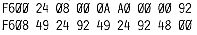

80-Bus Journal |
November 1983 · Ausgabe 10/11 |
B.Hasko Günther, Ansbach, stellte einige Unstimmigkeiten beim Verschiebungsvektor des ZEAP (2/83) fest. Hier hat er uns die Korrekturen mitgeteilt:
Im Datenfeld sind diverse Adressen übersehen worden. In D01BH befindet sich der Zeiger auf dieses Datenfeld, welches die Adressen der Editor-Befehle enthält. Dieses Feld geht von D036H bis D075H. Dieser und die nachfolgenden Zeiger werden beim Kaltstart ins RAM (F00H) geladen und müssen ebenfalls geändert werden. Folgendes sind die geänderten Bytes im Verschiebungsvektor, mit dem ZEAP jetzt auf jedem Bereich einwandfrei läuft:
„Langsame“ EPROMs 2732 oder 2764 lassen sich auch bei 4 MHz Taktfrequenz ohne WAIT-Zyklen betreiben, wenn der Chip-Select nicht mit MREQ verknüpft wird. Dafür müssen RD und MREQ über ein ODER-Gatter auf den OE-Eingang des EPROMs gelegt werden. Auf diese Weise läuft bei mir sogar ein 2732-6 bei 4 MHz problemlos. Eine andere einfachere Lösung wäre, das ursprüngliche CS-Signal direkt auf den OE-Eingang zu geben und den CS-Eingang ständig auf LOW zu lassen. Dies ist jedoch mit einer höheren Leistungsaufnahme des EPROMs verbunden.
Das automatische Laden und Starten eines Programms mit dem Generate-Befehl in Nassys empfinde ich als recht praktisch. Ich habe daher fast alle meine Programme auf diese Weise abgespeichert. Welche Möglichkeit hat man nun aber, wenn man einmal den Execute-Befehl verhindern möchte?
Die einfachste Möglichkeit ist folgende: Bildschirm löschen und in die oberste Zeile „R“ schreiben. Danach in die Mitte der Zeile(n), in der (denen) man den E-Befehl erwartet, z.B. ein „X“ schreiben. Dann mit dem Cursor zurück in die oberste Zeile und mit New Line den R-Befehl ausführen. Nun kann man das Tonband starten.
Der ganze Trick dabei ist, daß der Execute-Befehl durch das zusätzliche fehlerhafte Zeichen mit ERROR abgebrochen wird. Diese Methode funktioniert natürlich nur bei Programmen, die kürzer als 13 KByte sind, Durch folgende kleine Schaltung kann man aber auch hardwaremäßig da Starten des Programms verhindern:
Jörg Wittich, ___ Donaueschingen
Die Nachfrage nach den Floppy- Karten war so groß, daß die erste Serie sofort vergriffen war. So müssen einige Besteller nun eben bis zur Woche vor Weihnachten warten, das ist der Termin, den uns die Lieferfirma versprochen hat.
Leider mußten wir die Lieferfirma wechseln, da der ursprüngliche Platinenhersteller sehr unzuverlässig in der Einhaltung der Termine war.
Nachdem uns dadurch neue Kosten für die Herstellung eines Bohrbandes etc. entstanden, und die Kosten für PROMs und Programmierung sowieso zu knapp kalkuliert waren, haben wir bei dieser Aktion bisher bedauerlicherweise ’draufbezahlt. Deshalb müssen wir den Preis für Neubestellungen auf DM 70.– erhöhen. (Die Erstbesteller lachen sich natürlich in’s Fäustchen).
Wenn Sie in die augenblickliche Serie noch einsteigen wollen, so bestellen Sie bitte sofort. Es ist nicht gewiß, ob nochmals eine Serie aufgelegt wird. Momentan könnten wir die Stückzahl aber sicher noch erhöhen.
Für die 80x24- Karte haben sich inzwischen auch nochmals einige Interessenten gemeldet. Eine Mini- Serie ist jetzt in der Herstellung. (Termin wie oben). Je weniger Abnehmer, desto mehr Kosten pro Platine. Deshalb müssen wir für diese Platine DM 65.– verlangen. Ich bitte die Vorbesteller, den Betrag auf unten angegebenes Konto zu überweisen. Auch hier bestünde die Möglichkeit für Neubesteller, noch mit in die Serie einzusteigen. Dann aber bitte sofort melden. Die „Aufträge“ werden prinzipiell nach Eingang der Bestellungen bearbeitet.
Grundsätzlich möchte ich darauf hinweisen,
| Seite 6 von 52 |
|---|